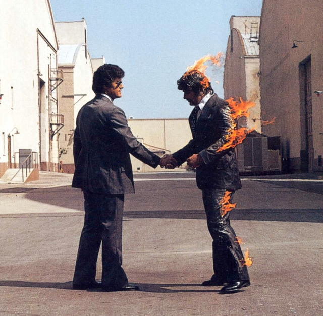

20 de Março de 2023
Foo Fighters - The Pretender

Keep you in the dark You know they all pretend Keep you in the dark
And so it all began Send in your skeletons Sing as their bones go
marching in again They need you buried deep The secrets that you
keep
are ever ready Are you ready? I'm finished making sense Done
pleading
ignorance That whole defense Spinning infinity, boy The wheel is
spinning me It's never-ending, never-ending Same old story What if
I
say I'm not like the others? What if I say I'm not just another one
of
your plays? You're the pretender What if I say I will never
surrender?
What if I say I'm not like the others? What if I say I'm not just
another one of your plays? You're the pretender What if I say that
I'll never surrender? In time or so I'm told I'm just another soul
for
sale, oh well The page is out of print We are not permanent We're
temporary, temporary Same old story What if I say I'm not like the
others? What if I say I'm not just another one of your plays?
You're
the pretender What if I say that I'll never surrender? What if I
say
I'm not like the others? What if I say I'm not just another one of
your plays? You're the pretender What if I say I will never
surrender?
I'm the voice inside your head You refuse to hear I'm the face that
you have to face Mirroring your stare I'm what's left, I'm what's
right I'm the enemy I'm the hand that'll take you down Bring you to
your knees So, who are you? Yeah, who are you? Yeah, who are you?
Yeah, who are you? Keep you in the dark You know they all pretend
What
if I say I'm not like the others? What if I say I'm not just
another
one of your plays? You're the pretender What if I say I will never
surrender? What if I say I'm not like the others? What if I say I'm
not just another one of your plays? You're the pretender What if I
say
that I'll never surrender? What if I say you're not like the
others?
(Keep you in the dark) What if I say I'm not just another one of
your
plays? (You know they all) You're the pretender (pretend) What if I
say I will never surrender? What if I say I'm not like the others?
(Keep you in the dark) What if I say I'm not just another one of
your
plays? (You know they all) You're the pretender (pretend) What if I
say I will never surrender? So who are you? Yeah, who are you?
Yeah,
who are you?
20 de Março de 2023
Pink Floyd - Wish You Were Here

And disciplinary remains mercifully Yes and um, I'm with you Derek,
this star nonsense Yes, yes Now which is it? I am sure of it So, so
you think you can tell Heaven from hell? Blue skies from pain? Can
you
tell a green field From a cold steel rail? A smile from a veil? Do
you
think you can tell? Did they get you to trade Your heroes for
ghosts?
Hot ashes for trees? Hot air for a cool breeze? Cold comfort for
change? Did you exchange A walk-on part in the war For a leading
role
in a cage? How I wish, how I wish you were here We're just two lost
souls Swimming in a fish bowl Year after year Running over the same
old ground What have we found? The same old fears Wish you were
here